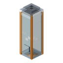

Reception Capsule
Summary
The Reception Capsule is where the archive brings the settlement's residents back. For energy and materials it restores one Shift Worker at a time: a former record of this world that has no name, only a number on its back. In look and in meaning it is a relative of the Teleporter's capsule: the archive brings a record back.
The capsule closes the path through a work town: find the town → power the Settlement Core → bring back the first shift worker.
Quick example: the core in the town hall is lit and the settlement is yours. Run an LV cable to the lower part of the capsule, put in 1 Electronic Circuit, 8 Rubber and 4 Copper Plates and wait until the capsule has gathered 100 000 EU/FE. After one in-game day of restoring (≈20 minutes) a shift worker with a number on its back, for example W-117, appears on the floor of the flask.
How it works
- Its own settlement. The capsule finds by itself the settlement whose territory it stands on; if the territories of two settlements overlap, it takes the one whose core is closer. While the capsule stands, its settlement does not change.
- Conditions. The capsule works only if its settlement's core is in place and lit, the capsule itself is on that territory, the settlement has an owner, and there are fewer living shift workers than the limit (4 at LV).
- Price. The capsule gathers EU/FE in its buffer and holds the materials in three slots; each slot takes only its own material — by hand, from a hopper or through a pipe. Once everything is in, restoring begins: one in-game day — 24 000 ticks, about 20 minutes. From the very first tick the bar and the status line show at least 1 %, so you can see the process has started.
- Result. At the end of restoring exactly one shift worker appears in the flask — on the floor, facing out — and only after that does the capsule take the price: the EU/FE and the materials at once. A worker's number looks like
<letter>-<three digits>and is never repeated anywhere in the world; the worker's look depends on the number too. - A refusal takes nothing. No core, the core taken away or dark, the capsule outside the territory, no owner, the settlement full, not enough materials or EU/FE, the archive failing to place the worker in the world — the materials and the gathered energy stay in the capsule. The capsule's window names the reason in a line.
- Progress is not lost. If the core goes dark in the middle of restoring, the bar freezes; once the core is lit again, restoring carries on from the same spot. If the archive does not answer (the worker could not be placed in the world), the bar resets, and the capsule waits one restoring before it tries again.
Bringing back the dead
A dead shift worker's number is never handed to a new one. By default a shift worker's death is final. If the server turns that off, a dead worker waits to be brought back, and the capsule offers a choice: a button in the window cycles "New worker" → the settlement's dead by number → "New worker" again.
- The worker brought back is the same shift worker: the same number and the same look, in a new body.
- Bringing one back costs twice as much as a new one: 200 000 EU/FE, 2 circuits, 16 rubber, 8 copper plates. The capsule's buffer holds exactly the price of bringing one back.
- If a shift worker's death is final, a dead worker does not wait to be brought back, and there is no choice.
When the settlement sleeps
The settlement falls asleep because of the core, not the capsule: when the core goes dark, all the settlement's shift workers freeze where they stood and do not die from it; when the power comes back, they carry on from the same spot. While the core is dark, the capsule stands still too: a restoring in progress freezes and later carries on from the same spot, losing nothing.
Energy
| Field | Value |
|---|---|
| Role | consumer that gathers energy in a buffer |
| Tier / grid intake | LV, up to 32 EU/FE per tick; a cable connects to the lower part of the capsule, on any side except the open front |
| Buffer | 200 000 EU/FE — exactly the price of bringing back a dead worker |
| EU/FE per shift worker | 100 000 EU/FE (bringing one back — 200 000) |
| Restoring time | 24 000 ticks (one in-game day, ≈20 min) |
On a full LV packet (32 EU/FE per tick) 100 000 EU/FE take 3125 ticks to gather — about 156 seconds. From one fuel generator (8 EU/FE per tick) it takes 12 500 ticks, about 10.4 minutes, and meanwhile the settlement's core spends its own 8 EU/FE per tick. So the first shift worker needs several generators or a stored reserve.
Inventory
| Slot | Takes | How many per shift worker |
|---|---|---|
| 1 | Electronic Circuit | 1 (bringing one back — 2) |
| 2 | Rubber | 8 (bringing one back — 16) |
| 3 | Copper Plate | 4 (bringing one back — 8) |
This is not a recipe but a price: the materials sit in the capsule until it is time to take them. The circuit is the electronics of the shift worker's work suit, the rubber is the overall itself, the copper is the helmet's parts and the battery on the back. All of it is made before MV machines.
Interface
- A window taller than usual: a header, a bar, three rows of materials and the player's inventory at the bottom.
- The header holds a 3D shift worker head, "Shift workers: N / M" and "EU/FE: X more" or "EU/FE: ready".
- Under the header is the choice "New worker" / "Bring back W-117 (×2)" (the button appears only when there is someone to bring back) and the restoring bar across the whole width of the window.
- The materials take a row each: the slot, the item's name and "have/need" on the right (in red while it is short). The energy bar sits to the left of the rows.
- At the bottom is the reason for a refusal (no core, the core taken away, outside the territory, the core without power, no owner, the settlement full, not enough materials, not enough EU/FE, the archive not answering) or "Restoring: N%".
Block Properties
| Field | Value |
|---|---|
| Shape | a glass flask three blocks tall, open at the front: a steel floor, corner posts and walls at the bottom, and on top a roof with an emitter and a cap. A shift worker as tall as a player stands inside it whole. The flask is see-through and does not hide neighbouring blocks |
| Collision | the posts, walls, thin floor, roof and cap follow the model; inside there is room for one shift worker, who can walk out at the front |
| Placing | faces the player; the spot needs two free cells above it. Breaking any of the three parts removes the whole capsule |
| Window | a click on any part of the flask opens the capsule's window |
| Hardness and tool | unbreakable, like bedrock, and immune to explosions; the settlement's owner breaks it with any pickaxe, like a block of hardness 5 |
| Piston | cannot be pushed |
| Drop | exactly one capsule plus the materials from its slots. Without a capsule the settlement takes no new shift workers; everything else keeps working |
| Where it stands | in the town hall of every work town: empty, three cells west of the core, with its open side facing the core; also in the creative tab |
Recipes
The capsule has no recipe: it already stands in the town hall of every work town, and it can also be taken from the creative tab.
Progression
- Needs a lit Settlement Core of its own settlement, and an owner for that settlement.
- Gives shift workers — one at a time, up to the settlement's limit (4 at LV).
Related
- Settlement Core — the capsule does not work without it.
- Teleporter — the teleporter's capsule, a relative in looks.